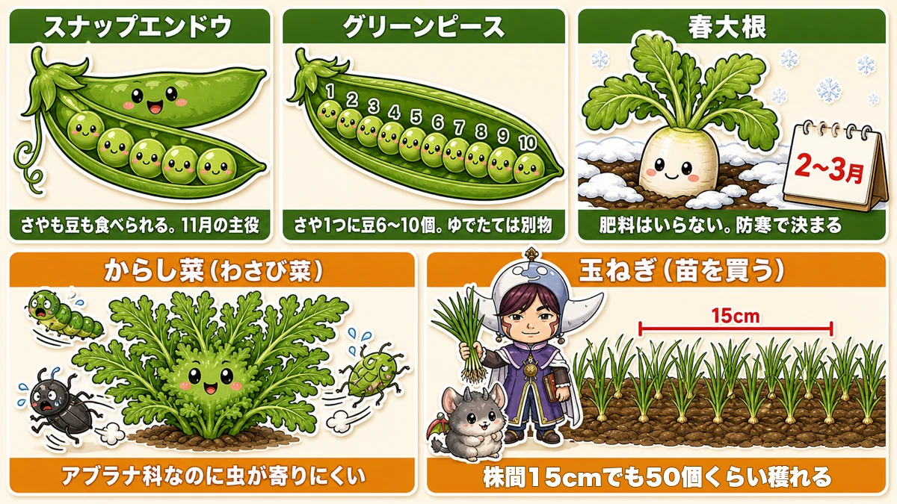
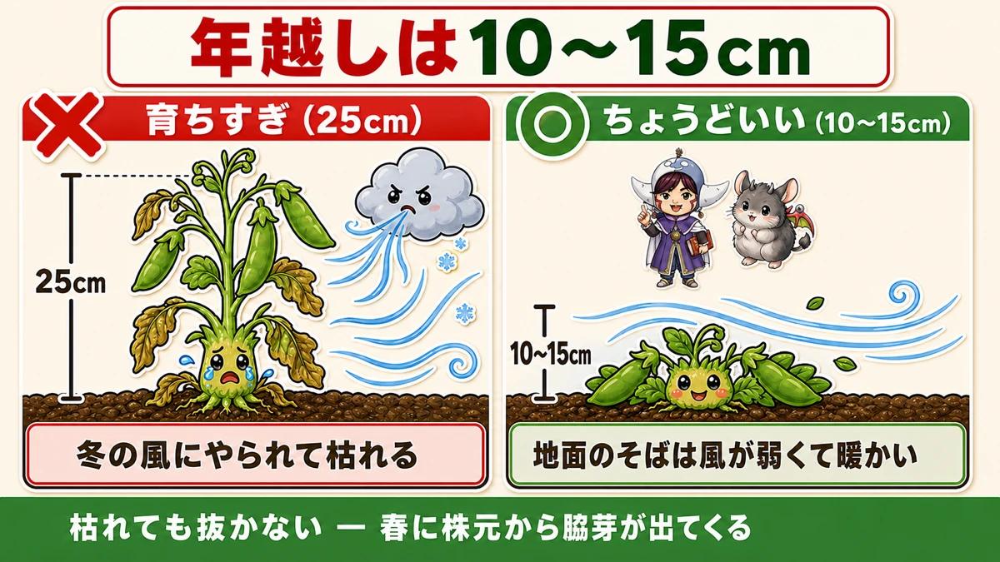
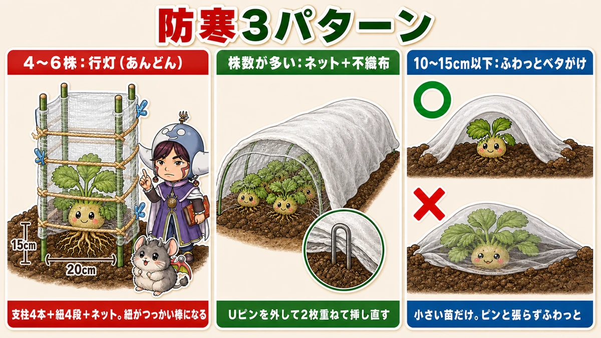
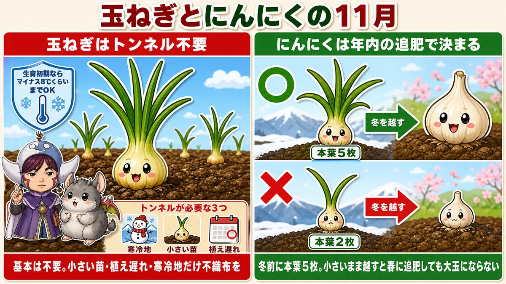
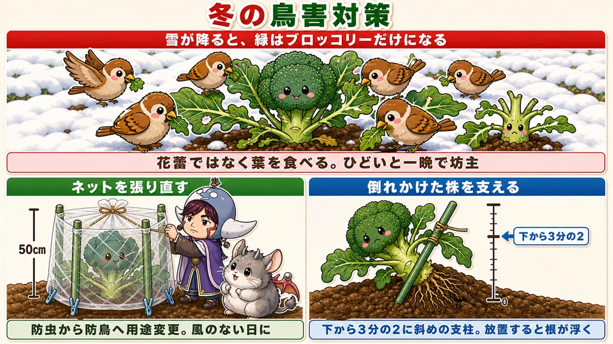

What to sow in November 🍂 Small plants are the ones that survive winter
🗨️ "Surely there's nothing left to plant in November?"
🗨️ "My peas are growing beautifully, so that's fine."
🗨️ "Birds ate the entire plot over the winter."
Hello, I'm Eiko. Eight years of growing vegetables organically and without pesticides, and a teaching licence in science.
The monthly instalment — November.
The point, up front:
What survives winter is not the well-grown plant. It's the small one.
That runs against instinct, and it took me a season to believe. I watched sugar snap peas shooting away and congratulated myself — and they died after the turn of the year. The spindly late-sown ones in the next bed came through.
November is a month for sowing, and just as much a month for deciding how you'll protect things ☺️
The state of the garden this month
November is for planting what you'll harvest in spring. The first frosts arrive in the second half, and conditions change sharply — treat early and late November as two different months.
- Early — still mild days. Direct sowing works surprisingly well
- Mid onward — direct sowing gets difficult; buying plants is the reliable option
Garden centres start stocking plants mid-month. This is a month where deciding to buy is entirely sensible.
Use beds that something has just come out of
The difficulty in November is there's no time for soil preparation. Fertiliser works after it has broken down, which takes over two weeks — add, wait, plant, and you've missed the window.
So use the beds that are being cleared now. Something planted in early autumn and cropping now: clear it slightly early and plant straight in. The fertiliser put in for the previous crop is still there, so you don't feed again.
Good candidates: aubergines that are finishing, mooli sown in early autumn, mizuna sown in early autumn. Calling time on something that's "still cropping, just about" is the November skill.
Five things to plant

What this diagram says （図解の文字）
- Five things to plant in November
- Sugar snap peas — pod and bean both edible. November's main event
- Garden peas — 6–10 beans in a pod; freshly boiled they're a different thing entirely
- Spring mooli — harvest late winter; no fertiliser needed; frost protection decides it
- Mustard greens (wasabina) — a brassica that insects leave alone
① Sugar snap peas
November's main event — a tender edible pod with sweet peas inside it, both at once. And it crops heavily.
Expensive to buy, and grown at home you get more than you can eat. Its one real difficulty is needing to overwinter, which the next section is about.
② Garden peas
Overshadowed by the above, and I'd like more people to grow them.
Most people know garden peas as the frozen green dots on a fried rice. Freshly boiled they are a completely different food — aromatic, and sweet in themselves.
The pods are about twice the size of a sugar snap, with six to ten peas packed inside — and opening one is genuinely enjoyable.
Sown in November, harvested in early summer. A long season, and almost no pest or disease worries. Boil them with salt first, then make a rice dish. Strongly recommended.
③ Spring mooli
The third sowing of the year: early autumn for a winter crop, mid autumn for an over-winter crop, November for a spring crop. One vegetable, three times over.
- Harvest in late winter
- No fertiliser needed
And frost protection decides whether it works. Covered, it grows away; uncovered, it barely moves. Not the place to economise on materials.
④ Mustard greens (wasabina)
A leaf crop that suits no-spray growing particularly well. It's a brassica, and insects leave it alone far more than any other brassica — because of the mustard heat. If you don't want to be netting things, there's no better choice.
And the flavour changes with the season: grown warm it's merely hot; grown cold, sweetness comes through underneath the heat.
Wasabina is the one I'd pick — a mustard green with a wasabi-like aroma. In a salad it carries the dish on its own. Harvest in late winter.
⑤ Onions (bought as plants)
November onions go in as plants, not seed.
- 15 cm apart — they pack in tightly
- Fifty bulbs from a small area
- Harvest in early summer
That 15 cm spacing is the point: the yield per square metre is remarkable. A bed the size of a doormat covers most of a family's year.
Small plants survive

What this diagram says （図解の文字）
- Go into the new year at 10–15 cm
- × overgrown (25 cm) — killed by the winter wind
- ○ about right (10–15 cm) — close to the ground the wind is weak and it's warmer
- Don't pull it even if it dies back — side shoots come from the base in spring
There's a definite number for peas and broad beans:
10–15 cm tall at the end of December.
Anything substantially bigger than that will mostly die over the winter.
Why big plants die
Surprisingly, peas and broad beans are reasonably tolerant of cold itself. What they're weak against is cold wind.
A tall plant takes the wind full on, and has more soft new stem to lose.
A short plant sits just above the ground, out of the wind — and the ground cools more slowly than the air, so hugging it is safer.
So being pleased in November that they're "growing well" is a warning sign. These days an over-tall plant makes me uneasy.
If they've already run away
- Pinch the tips so they stop extending
- Protect them as below
And the thing I most want to say: if it dies back, don't give up on it.
If the roots are alive, new side shoots come from the base, and those crop perfectly well. A brown, dead-looking top makes you want to pull it — don't. They come up from below in spring.
Three ways to protect, by how many plants you have

What this diagram says （図解の文字）
- Three protection patterns
- 4–6 plants: a lantern frame — four canes, four levels of string, netting. The strings act as braces
- Many plants: netting plus fleece — take the pins out, lay both layers, pin again
- Under 10–15 cm: fleece laid loosely straight over — only for small plants; loose, not taut
- Four to six plants → a lantern frame: four canes, string wound round at four levels, netting outside. The strings double as braces
- A lot of plants → netting plus fleece: take the pins out, lay the two layers together, pin them back down
- Plants under 10–15 cm → fleece laid straight over, loosely. Loose, not taut
Onions and garlic this month

What this diagram says （図解の文字）
- Onions and garlic in November
- Onions don't need a tunnel — in early growth they take about −8 °C
- Three cases that do need one: cold regions, small plants, planted late
- Garlic is decided by the feed before the year ends ／ five true leaves to overwinter
Onions don't need a tunnel. In early growth they tolerate about −8 °C. Fleece is only for: a cold region, small plants, or a late planting.
Garlic is decided by the feed given before the year ends, and the benchmark for going into winter is about five true leaves.
When it snows, the birds arrive

What this diagram says （図解の文字）
- Winter bird protection
- Once snow falls, the only green left is the broccoli
- They eat the leaves rather than the head. Badly hit, a plant is stripped overnight
- Re-hang the netting — 50 cm — repurposed from insect netting to bird netting, on a still day
- Support leaning plants — a diagonal cane at two-thirds height. Left alone the roots lift
Snow cover means the only green thing in the garden is the brassicas — and they eat the leaves, not the head. Badly hit, a plant is stripped to stalks overnight.
- Re-hang the netting, about 50 cm above the plants — the insect netting becomes bird netting. Do it on a still day
- Support anything leaning with a diagonal cane at about two-thirds height — left alone the roots lift out of the ground
The science: why small plants are hardier 🔬
Two reasons, and both come down to physics.
First, water. A well-grown plant has soft tissue holding a lot of water, and water expands when it freezes, destroying cells from inside. A small plant's tissue is harder and holds less water, so freezing does less.
Second, position. Soil banks the day's heat and releases it slowly, so the air immediately above it stays warmer than the air a foot higher — and the wind there is weaker. A low plant is inside that layer; a tall one is sticking out of it.
Which is why "go into winter small" isn't a compromise. It's putting the plant where the conditions are mildest ☺️
To sum up
- ✅ Early and late November are different months
- ✅ No time for soil prep — plant into beds just cleared
- ✅ Five to plant: sugar snaps / garden peas / spring mooli / mustard greens / onion plants
- ✅ Mustard greens are the brassica insects ignore
- ✅ Onions at 15 cm give a remarkable yield per square metre
- ✅ Peas and beans should enter the new year at 10–15 cm
- ✅ Cold wind, not cold, is what kills them
- ✅ Too big? Pinch the tips and protect them
- ✅ Don't pull a plant that has died back — side shoots come in spring
- ✅ Buying replacement plants is sensible
- ✅ Protection by numbers: lantern frame / netting + fleece / loose fleece
- ✅ Onions need no tunnel unless small, late or cold-region
- ✅ Birds strip brassicas once snow covers everything else
You don't have to do all of it. Go and measure one pea plant. If it's over 20 cm, pinch the tip today 🍂
Thank you for reading!